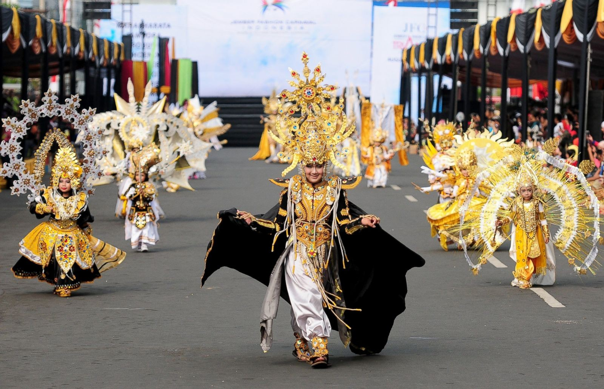
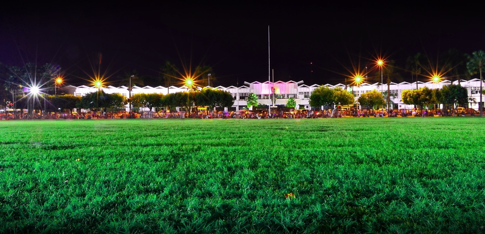
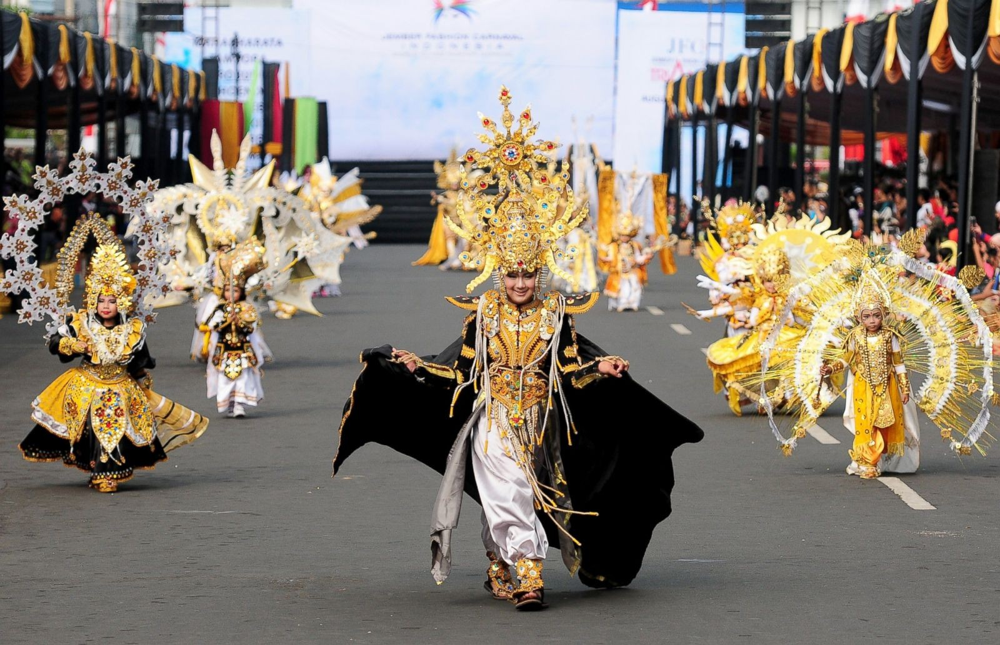
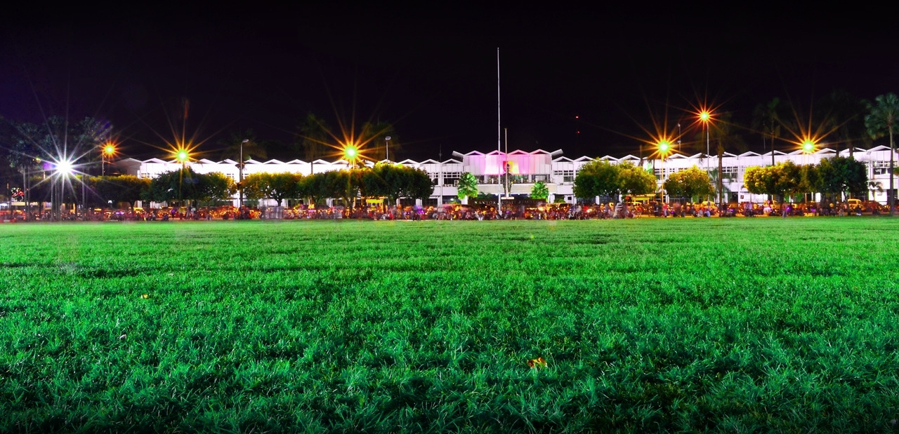
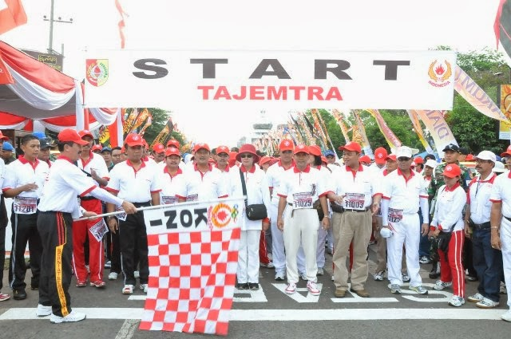

Event

Jember Fashion Carnaval
Jember Fashion Carnival (JFC) 2018 tampil makin megah. Dengan tema Wonderful Archipelago Carnival Indonesia (WACI), JFC 2018 menjadi sajian mempesona.
Read More >

Read More >
Gerak Jalan Tanggul Jember Tradisional (Tajemtra)
Gerak jalan yang memiliki kepanjangan Tanggul Jember tradisional ini diadakan sejak tahun 1977. Peserta Tajemtra dikategorikan dalam 4 kelompok nomor lomba diantaranya beregu umum putra/putri, beregu pelajar putra/putri, perorangan putra usia 45 tahun keatas dan perorangan putri usia 40 tahun keatas.
Read More >
Bulan Berkunjung ke Jember
Bulan Berkunjung ke Jember, merupakan sebuah agenda tahunan yang di selenggarakan oleh pemerintah kabupaten jember. Acara bulan berkunjung ke jember ini di tujukan untuk memberikan tontonan ke masyarakat jember ataupun kepada wisatawan yang datang ke jember.
Read More >

 @PariwisataJember
@PariwisataJember Pariwisata_Jember
Pariwisata_Jember @Jember_Pariwisata
@Jember_Pariwisata